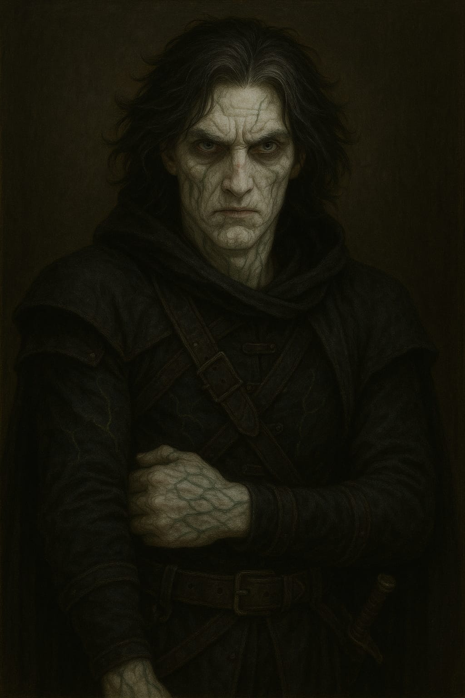
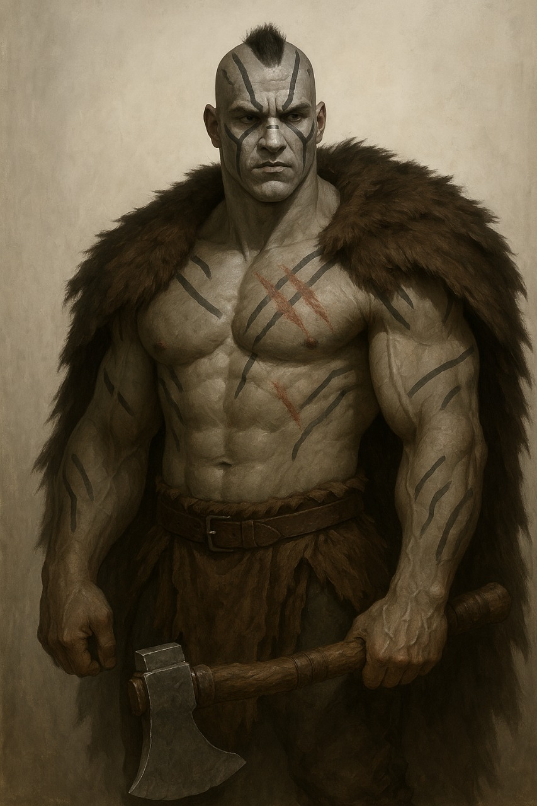
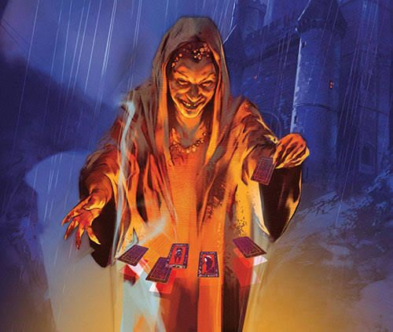
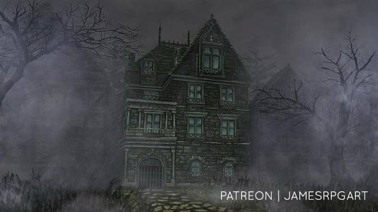
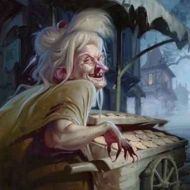

Curse of Strahd
Uma campanha de RPG de mesa ambientada no mundo de Ravenloft, onde os jogadores enfrentam o vampiro Strahd Von Zarovich e suas criaturas malignas. A história se passa na sombria e aterrorizante Baróvia, onde os jogadores devem desvendar mistérios, enfrentar horrores e lutar pela sobrevivência.
Personagens
- Porronto - Mago Gnomo
- Makar - Bárbaro
- Erasmus - Ladino / Cria Vampirica
Strahd Von Zarovich
Thalindor, o Ranger
Thalindor, o elfo ranger, mostrou-se um estrategista nato e um protetor habilidoso em momentos críticos de sua jornada em Baróvia:
- Sessão 1: Auxiliou na análise do mapa de Baróvia, identificando pontos estratégicos para futuras explorações.
- Sessão 3: Guiou o grupo até o cemitério de Baróvia, evitando emboscadas de lobos e garantindo segurança para o enterro de Kolyan Indirovich.
- Sessão 5: Investigou o lago Zarovich e descobriu pistas importantes sobre Anna Krezkova e a conexão com Strahd.
- Sessão 7: Realizou disparos precisos contra as crias vampíricas durante a defesa da igreja de São Andral, protegendo os aldeões.
- Sessão 8: Liderou o reconhecimento das ruas de Vallaki antes da revolução, permitindo que o grupo se movesse com segurança durante o caos.
- Sessão 9: Usou suas habilidades de sobrevivência para encontrar uma rota de fuga alternativa do Castelo Ravenloft, caso o grupo fosse encurralado.
Thalindor une estratégia e bravura, sendo uma peça indispensável no grupo, especialmente em momentos que exigem precisão e conhecimento do terreno.
Arnaldo, o Bardo
Arnaldo, o vibrante bardo humano, destacou-se como a alma do grupo, trazendo carisma e inspiração em momentos cruciais de sua jornada em Baróvia:
- Sessão 1: Encantou Madame Eva com uma performance memorável, fortalecendo a confiança do grupo na leitura de cartas.
- Sessão 3: Liderou os rituais musicais durante o enterro de Kolyan Indirovich, confortando os moradores da vila de Baróvia.
- Sessão 5: Compôs uma balada épica após a batalha contra o Espantalho, motivando o grupo para os desafios futuros.
- Sessão 7: Usou sua oratória para persuadir os moradores a permanecerem na igreja de São Andral durante o ataque de crias vampíricas.
- Sessão 8: Inspirou os revolucionários de Vallaki com um discurso poderoso, unindo os aldeões contra o regime do Barão Vargas.
- Sessão 9: Demonstrou sua habilidade teatral ao distrair Strahd durante o jantar, permitindo ao grupo observar o castelo discretamente.
Arnaldo é o coração do grupo, combinando música, eloquência e carisma para manter a moral alta e garantir que seus aliados nunca percam a esperança em meio às trevas de Baróvia.
Clérigo - O Guardião da Luz
O clérigo do grupo, farol de fé e cura, tem sido fundamental para manter a esperança e a força do grupo em meio às trevas de Baróvia:
- Sessão 2: Usou suas magias divinas para curar ferimentos graves após o combate no Monte Verderrante, salvando a vida dos companheiros.
- Sessão 4: Protegeu o grupo contra as maldições e ataques sombrios durante a luta contra Morgantha e suas megeras.
- Sessão 7: Sustentou a fé do grupo durante o confronto com Strahd, oferecendo bênçãos que aumentaram a resistência de todos.
- Sessão 8: Participou da defesa dos civis durante a revolução em Vallaki, combinando proteção divina e combate tático.
- Sessão 9: Ajudou a manter a moral e saúde do grupo durante o jantar tenso com Strahd, preparando-os para os desafios futuros.
Com devoção e poder sagrado, o clérigo é a âncora espiritual que guia e protege seus aliados na escuridão implacável de Baróvia.
Erasmus, o Ladino Pálido
Thiago/Thy/Thigas da vida Erasmus, ou também Viktor "O ladino palido" conhecido assim pela tonalidade absurdamente palida de sua pele devido a experimentos feitos em seu corpo durante o episódio de sua vida ao qual foi sequestrado pelo lorde vampiro quando ainda novo, sendo uma das únicas cobaias a sair vivo do castelo e livre do controle mental do Lorde da Barovia. Com 1,86m de altura, olhos sem vida e cicatrizes por todo seu corpo o ladino Damphyr veste seu manto preto em volta de seu corpo levemente deformado em busca de se misturar e sumir em meio a multidão até ter o seu momento de vingança.
Erasmus, O ladino, deixou sua marca com bravura e compaixão em momentos cruciais:
- Sessão 1:Introduzido como um personagem misterioso, começou a conectar seu passado com Strahd.
- Sessão 3: Contribuiu no enterro de Kolyan Indirovich e enfrentou a cria vampírica Doru. Descobriu ser Erasmus, filho perdido de Von Richten.
- Sessão 5: Demonstrou habilidades furtivas ao interagir com Rictávio (Von Richten disfarçado).
- Sessão 7:Liderou o grupo em furtividade durante a invasão de Vallaki e enfrentou crias vampíricas. Tentou desafiar Strahd fora da igreja, sofrendo uma derrota, mas ganhando resiliência.
- Sessão 8: Apoiou a revolução em Vallaki, protegendo civis em meio ao caos.
- Sessão 9: Reencontrou Ezmeralda D'Avenir e reforçou o grupo com novas descobertas. Ajudou a explorar o Castelo Ravenloft e desviou a atenção de Strahd, garantindo a sobrevivência do grupo.
Erasmus combina inteligência e compaixão, trazendo equilíbrio ao grupo enquanto enfrentam Baróvia.
Porronto, O destemido
Porronto, E o eco da redenção
Peu da vida a Porronto e sua história começa no coração dos Bosques Sussurrantes, uma vila gnômica florescia, criada por seu avô Mordenkainen , que após fundar a vila desapareceu sem deixar vestígios e nunca mais voltou, a vila protegida por séculos de tradição mágica e sua conexão com o mundo natural. Porronto Runaférrea era um dos mais talentosos jovens magos do lugar, conhecido por sua curiosidade insaciável e suas invenções mágicas engenhosas. Ele era um guardião da paz, mas também um espírito inquieto, sempre buscando algo além das árvores que cercavam seu lar.
Essa paz chegou ao fim na noite em que Maltraxis, um mago temido por seu domínio sobre magias sombrias, lançou seu ataque. Com feitiços de opressão e correntes mágicas, ele tomou toda a vila como prisioneira, deixando Porronto inconsciente entre os escombros. Quando despertou, encontrou-se sozinho nas ruínas de seu lar, com as marcas de sua derrota ardendo tanto quanto sua dor. Seu povo havia desaparecido, levado para um destino cruel que ele não conhecia. O jovem mago fez um juramento naquele momento: ele encontraria seu povo, não importava o custo.
Porronto começou sua busca, mas logo percebeu que sua magia, embora avançada, era insuficiente para enfrentar Maltraxis. Foi então que ele encontrou um grimório em uma torre abandonada, suas páginas cobertas por runas que brilhavam com energia infernal. Uma voz sedutora ecoou quando ele o abriu: Zal'kareth, um diabo astuto, ofereceu a ele o poder necessário para salvar seu povo. Em troca, Porronto deveria realizar pequenos rituais em nome de Zal'kareth e carregar o grimório como uma extensão de sua vontade.
Desesperado, Porronto aceitou. O poder veio de imediato, imenso e inebriante. Ele derrotou monstros, desafiou cultos e abriu caminhos que antes estavam além de sua capacidade. No entanto, os rituais exigidos pelo pacto começaram a revelar sua verdadeira natureza. Cada ato espalhava corrupção, amaldiçoava terras e destruía vidas inocentes. O que começou como uma busca heróica logo se tornou um fardo insuportável.
Em um momento de clareza, Porronto confrontou Zal'kareth, exigindo que o pacto fosse desfeito. O diabo apenas riu, lembrando-o de que o contrato era inquebrável. Envergonhado e consumido pela culpa, Porronto abandonou o uso do grimório, jurando nunca mais ceder às promessas das trevas. Ele sabia que, para resgatar seu povo e expiar seus erros, precisaria encontrar uma maneira de vencer de forma justa, usando apenas sua determinação, inteligência e a magia que ele mesmo dominava.
Agora, Porronto viaja como um andarilho, carregando o grimório como uma lembrança de suas falhas e uma constante tentação. Os sussurros de Zal'kareth ainda o perseguem, prometendo poder quando a esperança parece estar perdida. Mas Porronto resiste. Ele busca alianças, explora bibliotecas arcanas e aprende magias puras que podem rivalizar com as trevas que o cercam. Ele ajuda aqueles que encontra pelo caminho, espalhando esperança como uma forma de equilibrar o mal que causou.
Cada passo de sua jornada é um desafio contra as forças que o moldaram. Seu caminho é solitário e árduo, mas Porronto é guiado por uma chama inextinguível: a vontade de salvar seu povo e se redimir. Ele sabe que a batalha final contra Maltraxis será implacável, mas também acredita que, ao vencer suas próprias fraquezas, poderá encarar qualquer inimigo, seja humano, monstro ou diabo.
Porronto não é apenas um mago em busca de redenção. Ele é uma chama na escuridão, lutando contra as próprias sombras para provar que mesmo aqueles que falharam podem encontrar um novo caminho. Sua história não é apenas de poder, mas de coragem, sacrifício e a crença de que o bem pode prevalecer, mesmo diante das forças mais sombrias do multiverso
Porronto, o excêntrico mago gnomo, deixou sua marca em várias aventuras, mostrando coragem e habilidades mágicas únicas:
- Sessão 1: Participou da leitura das cartas de Madame Eva, absorvendo segredos valiosos para derrotar Strahd.
- Sessão 2: Sobreviveu ao combate contra o Monte Verderrante, mostrando resiliência e determinação.
- Sessão 4: Destruiu Morgantha e suas megeras com magias poderosas, incluindo suas caveiras mágicas.
- Sessão 6: Construiu um portal com Victor Vallakovich que o levou ao Castelo Ravenloft, enfrentando Strahd em um precipício.
- Sessão 7: Recuperou os ossos de São Andral durante o combate com crias vampíricas, protegendo os moradores da igreja.
- Sessão 8: Ajudou a revolução em Vallaki, derrotando os guardas do Barão Vargas com suas magias estratégicas.
- Sessão 9: Demonstrou compostura durante o jantar com Strahd, reforçando a união do grupo em momentos críticos.
Porronto combina inteligência, curiosidade e poder mágico, provando ser uma peça fundamental no grupo contra as forças da Baróvia.
Makar "Mata-Ursos"
Pedro Neiva da Vida à Elaukane, mais conhecido como Makar "Mata-Ursos" é um golias de 2,40m de pele cinza escurecida como chumbo, cabelo em moicano curto, barba fechada, grandes cicatrizes de garras de urso em seu peitoral. Se veste com roupas que aparentemente foram feitas por ele mesmo e uma capa feita de pele de urso, e porta um machado adornado que pertencia a seu pai antes de um desastre que ocorreu em sua vida.
Makar, o golias de 2,40m com cicatrizes impressionantes, é conhecido por seus feitos heroicos e momentos memoráveis, como:
- Enfrentar e derrotar criaturas imponentes com seu machado adornado.
- Demonstrar bravura ao liderar o grupo em combates intensos na Baróvia.
- Carregar consigo a capa de pele de urso que simboliza sua vitória em uma batalha lendária.
- Salvar aliados em situações críticas com sua força e determinação incomparáveis.
- Sessão 1: Introduzido como o imponente golias com capa de pele de urso, ajudou o grupo a estabelecer sua presença na Baróvia.
- Sessão 2: Enfrentou o Monte Verderrante, protegendo aliados como Porronto de perigos letais.
- Sessão 4: Demonstrou bravura ao destruir megeras no moinho Velho Móiossos, vingando almas inocentes.
- Sessão 7: Defendeu os aldeões da Igreja de Santo Andral durante a invasão liderada por Strahd.
- Sessão 8: Participou da revolução em Vallaki, derrotando guardas e garantindo a vitória contra o regime tirânico do Barão Vargas.
- Sessão 9: Sua presença durante o jantar no Castelo Ravenloft reforçou a determinação do grupo frente ao vampiro Strahd.
Sua história inspira o grupo, refletindo a resiliência necessária para sobreviver às adversidades de Ravenloft.
Sessão 1 - A Aventura começa
A JORNADA INESPERADA
Em uma bela noite de festa em Vaudaga, são apresentados um grupo de aventureiros bebendo e curtindo suas recentes conquistas. Um grande goliath de 2,40m de puro músculo ergue uma caneca em um brinde para seu grupo. Igualmente, um jovem elfo com vestes de couro e um pouco de lama e folhas em seu traje — talvez um ranger — faz o mesmo. Logo em seguida, um homem pálido com vestes escuras e rodeado por cicatrizes se junta ao brinde. Um belo humano grita e ergue sua taça: "Essa é por conta da casa! Aumenta o som, DJ!". É possível escutar uma voz fina, talvez de uma criatura pequena, dizer ao lado do Grande Makar: "Sai da minha frente, gorila! Não consigo alcançar as canecas!". A voz vem de um gnomo diferente dos demais, um gnomo com vestes de mago. Então, o último, mas não menos importante do grupo, um bardo, toca seu alaúde e traz melodia ao ambiente.
A cena corta para uma interrupção do jantar, vinda da duquesa de Vaudaga, chamando o exótico grupo para mais uma missão, nomeada "simples" para o grupo: expulsar os vistanos que se encontram na cidade, devido aos seus diferentes costumes e ao medo da população.
O INÍCIO
A comitiva chega até o acampamento onde se encontram os vistanos, já direcionando-se a uma negociação e "pedido" feito pela duquesa. Enquanto isso, Viktor, o ladino, espreita-se furtivamente pelo recinto, chegando até um conjunto de carroças. Ao vasculhar, percebe a existência apenas de suprimentos como vinho, comida e dinheiro. Porém, Viktor nota algo estranho nas moedas do grupo: em um dos lados da moeda, há um rosto não familiar, mas que o dhampir não consegue identificar. Assim, ele guarda uma consigo. Após o pedido feito pela comitiva, o grupo de ciganos parte de volta para sua terra, mas com uma condição: os aventureiros devem ajudá-los com um problema em suas terras. Butico, Porronto e companhia aceitam, por acharem ser algo simples e fácil para a "FORTE" equipe.
FORASTEIROS
Makar, pesado por degustar alguns vinhos, deita-se em uma das carroças, levando o pavio curto do gnomo consigo. O resto do grupo acomoda-se nas outras carroças, juntamente aos ciganos. Viktor, por sua excentricidade, prende-se de alguma forma estranha ao lado de fora da carroça. Após algumas horas de viagem, o grupo percebe a mudança na vegetação e natureza ao seu redor, entrando em um bioma extremamente cinza e sem vida, como se uma névoa os rodeasse. Viktor, por estar do lado de fora da carroça, reconhece aquele semblante da floresta como algo mágico.
"Aaaauuuu!" — uivos são escutados, deixando a comitiva da duquesa em alerta. Depois de alguns quilômetros percorridos, as carroças são forçadas a parar por algo na estrada. Thalindor, Porronto e Arnaldo (pelo que o narrador lembra) descem das carroças e decidem investigar, devido ao forte cheiro de morte. Assim, encontram o que está na estrada: corpos de cavalos destroçados e um homem segurando uma carta.
"Autópsia?", pergunta o bardo ao ranger.
— "Causas naturais", responde o gnomo, cortando a resposta racional do ranger.
BOAS-VINDAS
Depois de encontrarem os cavalos na estrada e uma carta endereçada à vila de Barovia — assinada por Kolyan Indirovich, o burgomestre morto — falando sobre sua filha estar doente, o grupo decide seguir viagem. Porém, deparam-se com a causa "natural" da morte dos cavalos: lobos. O grupo então entra em combate, mostrando pela primeira vez suas habilidades em luta. Com facilidade, lidam com aquela matilha de lobos selvagens e seguem viagem até o acampamento dos vistanos.
A BRUXA
Ao chegarem ao acampamento, a comitiva, antes mesmo de se instalar, resolve ir atrás de informações sobre aquele lugar e o que devem fazer ali para ajudar o grupo de ciganos. Assim, são apresentados a Madame Eva, uma velha senhora com semblante astuto e misterioso. Eva lhes apresenta o cenário em que estão: as terras de Barovia, uma terra gótica e perdida para as sombras. O objetivo do grupo é acabar com o mal que assola aquelas terras — a fonte de todo o mal, o lorde daquelas terras. Porém, ele não é um lorde qualquer, e sim um antigo e poderoso feiticeiro vampiro, conhecido como Strahd.
A velha se revela como uma bruxa e, na tentativa de "ajudar" o grupo, apresenta possíveis instrumentos que os auxiliem a derrotar o lorde, fazendo uma leitura de cartas. Após isso, ela teletransporta o grupo até a vila de Barovia. Lá, depois de investigações, a comitiva encontra uma casa "assombrada", de acordo com o povo da cidade, e decide entrar para fiscalizar os boatos. Antes de entrar, o bardo depara-se com duas crianças perdidas e assustadas e resolve ajudá-las, ficando para trás.
A CASA
O grupo desbrava a casa mal-assombrada. O gnomo, com seu espírito curioso maior do que seu próprio tamanho, decide separar-se e investigar o porão da casa sozinho. Thalindor, Butico, Makar e Viktor vasculham a casa e descobrem a existência de corpos — dois adultos que, ao que parece, eram aliados de Strahd, mas que, após não cumprirem uma ordem, tiveram esse destino. Os quatro guerreiros partem em direção ao sótão e encontram uma pilha de ossos de duas crianças, Cravo e Rosa.
O bardo, fora da casa, escuta os barulhos do combate vindo do porão e entra correndo para ajudar o grupo. Ao chamar as crianças para dentro da casa, elas negam. O bardo pergunta: "Vamos, por que não entram?". As crianças respondem ao músico: "Porque morremos aqui" — e somem em névoa, fazendo a porta se trancar.

Sessão 2 - A saga da Casa da Morte continua.
Após a entrada do bardo e a incrível revelação sobre as crianças, ele se encontra preso na casa mal-assombrada, onde só consegue escutar ventanias frias e sussurros sem um ponto de origem aparente — 'ele é o ancião, ele é a terra', repetidas vezes, até que barulhos de um combate são ouvidos no porão. Ao correr para checar o que é, o bardo se encontra com seu grupo de amigos lutando contra um bando de carniçais, enquanto o mago Porronto agoniza no chão.
MOMENTOS ANTES
Em meio à escuridão e aos sussurros sombrios, é possível ouvir apenas o cantarolar de um pequeno gnomo curioso. O mago Porronto encontra-se explorando o andar abaixo da casa, completamente sozinho, até que seu espírito de curiosidade o trai. Ouvindo grunhidos e respirações de seres não humanos — carniçais —, porém eles também o percebem. O pequenino se dá conta de que não há saída a não ser lutar. Então, em um pico de burra coragem, o mago invoca mísseis mágicos contra as criaturas e trava uma luta que, para ele, seria mortal. Após momentos de confronto, numa mordida brutal, Porronto tem seu braço arrancado pela besta. O mago cai no chão. Não é possível saber o que se passa na cabeça doentia do pequeno sociopata, porém, quando sua visão começa a ficar escura e sua respiração mais fraca, ao fechar os olhos, é possível escutar o rangido de lâminas e magias sendo ecoados pelo lugar. Porronto, ao abrir suas pálpebras achando que verá o Deus dos gnomos, se depara com uma cara angelical — ou seria diabólica? — de seu aliado Chico, o estabilizando. Vendo quem são seus salvadores: seus amigos.
A porta
O gnomo, não satisfeito com sua experiência de quase morte, decide partir, liderando o grupo em uma melhor varredura no local, assim chegando a uma espécie de corredor com aposentos e ficando novamente alone, pois se encantou com um quadro exposto no corredor, o fazendo sentir algo diferente em relação a ele. CORTA A CENA! O ladino, por seu faro e vício em surrupiar itens de outrem, decide procurar itens de valor pelos aposentos, assim encontrando uma espécie de mapa de entradas e compartimentos secretos. Após investigar uma dessas entradas, é surpreendido por três carniçais que estavam escondidos. O grupo se vê novamente em combate. Arnaldo, em uma tentativa de ajudar o ladino — que estava estrategicamente cercado pelas criaturas —, se torna o alvo e, de forma flanqueada, toma golpes que o deixam gravemente ferido. O clérigo, com um raio de luz, extermina um dos carniçais. Makar, com seu machado, consegue dar conta do outro facilmente. O terceiro carniçal, ao ver sua morte iminente, tenta golpear o bardo para levá-lo junto ao além-vida, até que sofre cerca de três golpes brutais no mesmo momento, efetivados por Thalindor. Novamente, o grupo está a salvo, porém Makar se dá conta da falta de um dos membros: 'O gnomo, cadê o gnomo?'.
O gnomo ainda se encontrava hipnotizado pelo quadro, até que decide tocá-lo. Quando seus pequenos e DESGRAÇADOS dedos encostam no quadro, uma grande boca surge, seguida de braços e olhos tortos. O gnomo grita: 'Eu sabia!!'. O mimico agarra Porronto, que grita por ajuda ao grupo, mas o mini-mago consegue se soltar com uma onda trovejante. Quando seus amigos chegam, o mimico havia sumido. Onde está ele? Após minutos de tensão, o grupo acha que ele havia ido embora. Porronto, de forma desprevenida, abre uma porta e encontra seu 'amigo' novamente, que o faz de refém. Butico, com um golpe incessante, consegue exterminar o mimico que havia sido ferido pelo grupo.
A Seita
O grupo se junta novamente, assim terminando de vasculhar a casa demoníaca e descobrindo que os que ali moravam faziam parte de uma seita que cultuava um tipo de entidade antiga, atiçando a fúria do lorde vampiro por não ser reconhecido como o único 'DEUS' que ali havia. O fim? Bom, algo não muito feliz.
A comitiva descobre uma entrada secreta que os leva a uma espécie de altar ritualístico antigo, e assim são postos à prova pela seita, antes de evaporarem em sombras: 'Um deve morrer'. O grupo, devido à sua ética e parceria, decide que não irá sacrificar ninguém. Assim, acordam algo: 'o ancião, a terra'. Um monte de lixo surge — algo vivo. Os aventureiros não esperam e logo decidem atacar.
O monte vederrante ataca primeiramente o pobre gnomo, que estava em seu dia de azar, quase o engolindo por inteiro, sendo salvo por seu cajado que entala na garganta do monstro. O grupo une forças para salvar mais uma vez seu 'mascote'. Viktor, o ladino, realiza uma acrobacia perfeita, cortando parte do braço da coisa. Makar aproveita os segundos em que o monstro abre a boca para rugir e retira o mini-suicida de sua epiglote, assim derrotando a criatura juntos.
Após conseguirem dissolver aquela espécie de culto paralelo, a casa amaldiçoada começa a desmoronar, os fazendo sair rapidamente dali e se encontrarem livres na vila de Barovia.

Sessão 3 - O Enterro
Livres para explorar a vila da Baróvia, o grupo visita a loja superfaturada de Bildrath, a casa de Maria Louca, a taverna Sangue da Videira, a Mansão do Burgomestre e a igreja.
Nesse percurso, conhecem Ismark e Irene Kolyana (a bela jovem atormentada pelo vampiro), filhos (embora Irene seja adotiva) de Kolyan Indirovich, o falecido burgomestre da vila.
Ismark quer levar sua irmã para um lugar seguro, que acredita ser a cidade de Vallaki, a cidade murada que todos julgam ser protegida do alcance do diabo Strahd. Em troca, oferece sua lealdade e um mapa de toda a Baróvia.
Antes de seguirem viagem, Irene deseja enterrar seu falecido pai. Assim o fazem, partindo em direção ao cemitério na igreja, precisando matar Doru, uma cria vampírica de Strahd e filho do padre Donavich. No calor do combate, Irene assassinou o acólito para se defender, o que a atormentou profundamente.
Após o enterro, o grupo presencia o fenômeno da Marcha dos Mortos, tão belo quanto assustador. Sabem que, em breve, serão eles marchando ao encontro de uma morte provável. Mas esse dia não é hoje. Nem amanhã. Por enquanto, a missão é deixar Irene à salvo, mesmo que isso traga a cólera do vampiro.
Sessão 4 - A Profecia de Madame Eva
Após deixarem a igreja, tendo descoberto sobre a Abadia de Santa Markova (que fica em Krezk), o grupo decide descansar na Mansão do Burgomestre. Ao sair pela tarde, se deparam com a megera Morgantha, que lhes vende Pastéis dos Sonhos, feitos com ossos de crianças portadoras de alma. Conquistam a simpatia da bruxa ao comprarem, fazendo com que ela revelasse que as "portas de âmbar" da leitura de cartas possivelmente se referem ao Templo de Ambar, que guarda "o maior segredo de Strahd".
Os aventureiros presenciam o assassinato de uma criança que foi entregue por pais viciados nos pastéis da megera. Por isso, se juntam para acabar com a vida da criatura desprezível. Em um último e certeiro golpe, Porronto, o Mago, evoca as caveiras mágicas, explodindo a criatura e reduzindo seus ossos a uma pilha de cinzas negras.
Finalmente, saem da Vila da Baróvia, acompanhando Irene e Ismark. Topam com uma tropa de caçadores barovianos comandada por Hans, um sujeito com segredos peculiares sobre "portas de âmbar". Ele relata que não conseguiu o vinho proveniente da vinícola Mago dos Vinhos em Vallaki.
Seguindo viagem, passam pela ponte de pedra e chegam em um bosque que, de acordo com lendas locais, era assombrado pelo espírito de uma moça de nome "Ivana" que, de acordo com as mesmas lendas, teve sua família destruída pelo vampiro e morreu nas mãos dos mesmos.
As lendas estavam certas. O grupo entra na cabana abandonada de Ivana, onde seus restos mortais jaziam com os dos seus filhos vampiros. Um combate se inicia a fim de acalmar o fantasma. Com isso, puderam lhe dar um enterro digno e a maldição se encerrou. Conseguiram descanso em uma região segura, algo raro na Baróvia.
No outro dia, a viagem foi muito mais tranquila pela manhã. Passaram dos portões do Oeste, chegando em um novo bosque pela noite. Foram enganados por um bando de "fogo-fátuos" que, embora insignificantes, foram chatos de lidar.
Após superarem o desafio, decidem descansar na floresta, quando são visitados por um misterioso e curioso vendedor de chapéus mágicos. Alegando se chamar Smirnogófi, o vendedor caiu nos encantos e ganhou a confiança dos aventureiros, até que se revelou ser o príncipe vampiro, Conde Strahd Von Zarovich.
Sua atitude de "ajudar" o grupo não parece fazer sentido. Será que acredita que os chapéus não funcionarão? Ou não serão suficientemente bons para ajudá-los a enfrentá-lo? Ou ele queria apenas deixá-los mais fortes para que pudesse ter um desafio a mais e, dessa forma, se divertir? Agora, é impossível saber.
Apenas se sabe que ele quer Irene Kolyana. Nesse dia, o grupo se mostrou digno da (mínima) atenção do Conde ao derrotar os dez lobos que se formaram a partir de sua forma humanoide. O vampiro recua, como um grande morcego voando sob a luz do luar, apenas para num outro dia retornar.
O tempo está correndo. O vampiro está a espreita. Espiões podem estar em cada esquina. Achar um lugar seguro não é mais uma opção, é uma NECESSIDADE. E, assim, o grupo segue no outro dia rumo a Vallaki.
No caminho, passam pelo Velho Moiossos. Um moinho castigado pelo tempo que abrigava uma laia de megeras da noite comandadas por Morgantha.
O bardo decide se passar por Morgantha, atuando de forma brilhante. Entra no moinho com o clérigo de (falso) refém. Essa estratégia, que surpreendeu as bruxas, e a morte da líder reverteram toda a situação a favor do grupo.
Após uma batalha que pendeu apenas para um lado da balança, a laia foi completamente aniquilada, vingando as milhares de crianças barovianas assassinadas a troco de "pasteis de sonhos".
Aqui se encerra a sessão 4. Há muito mais a se encontrar pela região. E a viagem para Vallaki se encontra cada vez mais próxima de seu fim.

Sessão 5 - Conspirações em Vallaki
Os aventureiros, acompanhados de Ismark e Irene, deixam o Velho Móiossos e continuam sua jornada para Vallaki. Após cerca de meio dia, durante a noite, chegam nos portões da cidade fortificada.
Os guardas tiveram grande resistência em deixá-los entrar. O ranger, perspicaz, encontrou uma brecha sem vigias no muro e invadiu. O restante conseguiu entrar acompanhando o Barão Vargas Vallakovich, um sujeito tenebroso e misterioso, para dizer o mínimo.
Dentro da cidade e sem olhos vigiando seus movimentos, Thalindon anda pela cidade, encontrando uma praça com cartazes que evidenciavam o “Festival da Cabeça de Lobo”, que ocorreu há um dia. Encontra dez vallakianos presos em berlindas, por terem ido contra o positivismo do Barão, com cabeças de burro esculpidas em gesso e presas a eles.
Apesar dos avisos, Thalindon segue sua boa moralidade e solta os prisioneiros, conduzindo-os para a brecha no muro. Entregou uma espada e cinco dias de ração. Dez plebeus viajando pela Floresta Svalich na noite da Baróvia... eles não devem sobreviver. Porém, ficar era assinar seu atestado de óbito.
O bardo, o bárbaro, o ladino, o mago (invisível), Irene e Ismark acompanharam o Barão até a sua casa, onde seus dois enormes Mastins aguardavam, onde guiou os três primeiros para seu escritório. O trato foi: “andem nos trilhos e digam que tudo vai ficar bem”, em troca da permissão para ficar na cidade e ostentar de sua segurança.
O mago Porronto, com sua enorme curiosidade digna de matar uma dúzia de gatos, sobe as escadas para o primeiro andar da mansão estando invisível, sem permissão e sem supervisão. Lá, Porronto encontra o quarto de Izek Strazni, o brutamontes capacho do Barão. Ele é enorme e possui um braço flamejante. Por algum motivo sombrio, o brutamontes coleciona bonecas Blinsky feitas a grande semelhança de Irene Kolyana. Por sorte, não acordou aquele ser, e conseguiu uma garrafa de vinho.
Ainda no andar de cima, ele conhece Victor Vallakovich, o filho do Barão, autodidata em magia, que possui como principal objetivo concluir sua magia de teletransporte para fora do inferno que é a Baróvia. Acredita que está fazendo algo de errado, e gostaria da ajuda de outro mago.
Após parte do grupo conversar com o Barão e Porronto se jogar da janela de Victor como um torpedo gnômico e destruir sua própria integridade física, seguem para a Estalagem Água Azul.
Nesse meio tempo, Thalindon, separado, caminha até o Armazém dos Arasek, uma mercearia e pátio de estocagem local. Compra alguns itens com Gunther, que vende tudo 4x mais caro que o normal. Ainda lá, decidiu averiguar uma carroça colorida, com o nome “As Maravilhas de Rictávio” plotado.
Dentro da carroça, um grande Tigre Dentes-de-Sabre. Thalindon tem a habilidade de se comunicar com bestas, descobre que ele se chama Tigreso e foi treinado por “Rictávio, o bardo”, para devorar Vistani. O tigre revela a verdadeira identidade do seu mestre, revelando seu conjunto de caçador de monstros. Rictávio era, em verdade, Rudolph Von Richten, o lendário caçador de monstros. Ele precisava contar isso para os seus amigos.
A Estalagem estava relativamente cheia de brutamontes, provavelmente caçadores, que estavam sendo entretidos por um bardo que contava uma história sobre “goblins siameses”. Irene e Ismark, cansados, decidem se sentar em uma mesa.
O ladino e o bardo do grupo decidem conhecer essa figura interessante, que descobre tratar se de Rictávio, um jovem meio-elfo bardo que vestia um chapéu engraçado. Maquiagem escondia algo em seus braços. Quando o bardo faz uma gracinha e tira (por pouco tempo) seu chapéu, a forma jovem se vai e surge um homem velho e carrancudo. Ele se recolhe em seu quarto, e é seguido pelo ladino.
Nesse meio tempo, o mago, o bárbaro e o clérigo conversam com Urvino Martikov, o dono da estalagem. Ele permite que fiquem quantas noites precisarem e lhes oferta vinho de boa qualidade de graça, desde que ajudem com um assunto: ir até a Vinícola Mago dos Vinhos para descobrir o que há de errado, pois remessas novas não chegam há tempos.
No quarto de Rictávio, há uma intensa discussão, que chama a atenção do restante do grupo. No momento que o ranger chega na estalagem e revela para os outros que Rictávio, na verdade, era o caçador de monstros, eles decidem entrar no quarto e entender o que está ocorrendo.
Rudolph Von Richten conta a sua história. Era um banqueiro que teve seu filho, Erasmus, raptado por bandidos Vistani para ser entregue a um lorde vampiro numa terra conhecida como Baróvia. Descobrir isso levou anos, muitas torturas e perseguições e combates contra monstros, e nesse caminho, foi amaldiçoado por uma velha vistana: “Todos os que você ama irão morrer”.
Conseguiu uma mentoranda: Ezmeralda D’Avenir, uma vistana ímpar, guerreia feroz. Ela deve estar na sua torre.
Acreditava que seu filho estava morto, até agora. Essa explicação desbloqueia memórias na mente do ladino Dhampyr. Ele era Erasmus. E agora tudo fazia sentido.
Conta que, quando chegou, tentou matar o vampiro. Não conseguiu, mas conseguiu fazer uma vela com seu sangue, que revela sua presença. Ela se encontra na torre. Também relata ao grupo sobre o Mago Louco do Monte Baratok, sobre sua carroça e sobre luzes roxas saindo da janela do sótão da Mansão do Barão.
A sessão se encerra quando, ao cantarolar uma música que seu pai lhe ensinou na infância, Erasmus prova ser realmente o filho desaparecido de Von Richten, trazendo uma grande confusão para a mente velha do lendário caçador de monstros.
Sessão 6 - Explorando Vallaki
O grupo de aventureiros sai da Estalagem Água Azul e parte para a exploração da cidade fortificada de Vallaki, separando-se.
As Peripécias do Mago Nanico
- Porronto foi até a Mansão do Burgomestre para ajudar seu amigo Victor a construir um portal que o levaria para fora de Vallaki.
- De alguma forma, o portal construído o levou diretamente para um precipício no Castelo Ravenloft, onde o vampiro Strahd Von Zarovich o aguardava.
- Victor foi empurrado do precipício, caindo de uma altura que lhe promoveu uma morte brutal. O mago foi enxotado de volta pelo portal, e foi fechado magicamente.
- Porronto ficou arrasado e passou a maior parte da sessão em luto por seu amigo, jogado no chão do seu estúdio.
A Descoberta do Culto
- O restante do grupo foi até a Wachterhaus, lar de Lady Fiona Wachter, seus dois filhos bebuns que a odiavam, sua filha alucinada e seu espião, Ernesto.
- Descobriram que Fiona era a maior inimiga do Barão Vargas e tinha uma forte ligação com o vampiro, o cultuava juntamente com cidadãos de Vallaki em seu porão.
- A mágica que os cultistas acreditavam ocorrer no centro do pentagrama era, na verdade, fruto das peripécias de um pequeno diabrete de estimação da Wachter, Majesto.
- Ao tentarem enganar Fiona entregando o coração do seu falecido esposo dizendo ser o do filho do Barão, responsável pelo enlouquecimento de sua filha, e ela perceber, ela os envia para uma armadilha.
- Parte do grupo se ausentou e foi visitar a Igreja de Santo Andral, enquanto parte ficou no local e executou todos os cultistas presentes, juntamente com a líder do culto. Majesto se refugiou em algum lugar.
A Igreja de Santo Andral
- Na Igreja, conhecem Padre Luciano Petrovich e seu coroinha mudo Miquéias.
- Descobrem que os ossos do padroeiro, São Andral, foram roubados, e a igreja se encontra desprotegida para ataques de criaturas da noite. E a noite estava chegando.
- O responsável pelo furto foi Milijov, o jovem coveiro. Enfeitiçado, ele informa que os roubou e vendeu ao fabricante de caixões da cidade, que pagou 10 PO.
- Precisavam encontrar os ossos antes de uma possível invasão ocorrer.
Caindo na Arapuca
- O grupo parte para a loja de caixões, onde um vendedor nada amigável estava sem um pingo de disposição para abrir a porta.
- O ladino e o ranger conseguem invadir por uma janela no primeiro andar. Sobem para procurar pelos ossos, pois não estavam no andar de baixo.
- Ao abrir um dos caixotes no andar superior, Thalindon se depara com uma criatura repugnante e fria, estava morta. Quatro crias vampíricas estavam descansando ali, aguardando o momento para executar um plano maligno e sinistro.
- No momento que a batalha começa, os outros integrantes do grupo chegam e interrogam o vendedor de caixões sobre a arma que poderia matar Strahd, informação dada pela Fiona Wachter, claramente enviando-os para serem mortos pelas crias vampíricas em um último golpe a favor do Lorde Vampiro.
Sessão 7 - A Invasão de Vallaki
A sessão se inicia com um combate equilibrado entre as crias vampíricas e o grupo de aventureiros. Durante a ação, o mago Porronto encontrou os ossos roubados de São Andral. Após serem eliminadas, o grupo sabia o que teria de fazer: correr para a igreja antes da noite cair, e ela estava caindo rapidamente.
A caminho para a Igreja
- Bardo, mago, ladino e ranger correram o mais rápido que puderam. Chegaram na igreja a tempo, embora o ladino tivesse caído no meio do caminho.
- Ao cair, o ladino percebe que sombras humanoides se movimentavam no telhado das casas. Estavam perseguindo o grupo? Ou apenas indo para o mesmo lugar?
A Chegada na Igreja
- Ao chegarem, percebem que diversos plebeus, adultos e crianças, estão buscando refúgio na Igreja de Santo Andral.
- Ao mostrarem que conseguiram os ossos para o padre, ele os chama para que os coloquem no devido local e inicia o rito de oração para promover proteção.
- O padre afirma que isso é um ato de pura fé, pois a igreja nunca havia sido atacada antes
- Porronto e Erasmus decidem sair.
- Após o rito, trancam as portas da igreja com Porronto e Erasmus do lado de fora, e a noite cai.
A chegada do Diabo Strahd
- Olhos vermelhos nos telhados das casas penetram as almas de Porronto e Erasmus, à medida que algo sombrio, cruel e monstruoso se aproxima seguindo a rua principal de Vallaki.
- A cada passo, os postes se apagavam, fazendo com que vissem o rosto da criatura somente quando ela estava muito, muito próxima.
- O vampiro Conde Strahd Von Zarovich estava na frente do mago e do ladino. Saudou-os com um educado “Boa noite”, e pediu licença para passar.
- Erasmus num lapso de fúria com um grande desejo de vingança e um sentimento de ódio mortal apenas avançou. Mas ele ainda não era páreo para o lorde.
- Seus golpes não surtiam efeito. Era lento. Era fraco. O vampiro se divertiu com ele. No final de sua brincadeira mortal, Erasmus estava no chão, brutalmente ferido e com sua moral jogada no lixo.
- Porronto seria poupado, e arrastou a carcaça de Erasmus, entre a vida e a morte, para o mato em volta da igreja, até que lançou um feitiço no vampiro.
- Strahd estava sem paciência, apenas ordenou que suas crias, que vigiavam de cima, descessem e cuidassem do mago.
- Ao pedir para entrar na Igreja e ter seu pedido negado, para o assombro de todos, entrou. Sim, ele era um vampiro, mas ele é o governante supremo de toda a Baróvia. Tudo pertence a ele. Logo, é ele quem deveria dar permissão para alguém entrar.
O Massacre
- Quando o clérigo e o bárbaro chegaram, era tarde. O massacre havia começado
- Com crueldade, Strahd ignorou quase que inteiramente todos os outros membros do grupo, focando nos moradores de Vallaki.
- Primeiro, assassinou o padre Luciano. Depois, chacinou os plebeus, independentemente de sua faixa etária, e, quando se cansou, foi embora de barriga cheia, deixando apenas um convite para que os aventureiros jantassem com ele em seu castelo.
Após a meia noite
- A igreja estava inundada em sangue.
- O clérigo conseguiu ressuscitar alguns dos plebeus, dentre eles o padre, tudo para descobrir uma verdade chocante: nem mesmo mortos podem deixar a Baróvia. Suas almas circulam no ar, presos pelas brumas em um cárcere fora da realidade.
- O padre perdeu sua fé e seu pequeno coroinha mudo o seguiu, saindo de Vallaki, rumo a lugar nenhum.
- Dois homens corvo haviam se juntado a luta, e recomendaram que fossem encontrar Urvino Martikov, pois algo grande estava para acontecer em decorrência dos acontecimentos dessa noite. Mais pessoas iriam morrer.
Sessão 8 - A Revolução
O grupo entende que uma guerra civil está para ocorrer. Urvino informa sobre a resistência ao domínio do Barão, composto pelo Prelado da Pena em conjunto com plebeus indignados e dotados de coragem, que planejava um golpe para tirá-lo do poder.
Sangue na Praça
- Após um descanso longo curar as feridas da noite anterior, o grupo parte para a casa do Barão para entender como poderiam resolver a situação.
- Erasmus não acompanha o grupo. Precisaria de um tempo para lidar com o gosto amargo de uma derrota tão humilhante.
Ao chegarem na Praça, em frente a casa do Barão, percebem que a população revoltada já estava tentando invadi-la, impedidos por guardas da cidade. - Quando o Barão Vargas tentou fazer seu discurso positivista, uma pedra o acertou precisamente na cabeça, e ele ordenou que os guardas matassem todos os presentes.
- Enquanto os guardas brigavam com a população em revolta, Izek e outros guardas avançavam contra o grupo, culpando-os de terem soltado os prisioneiros na praça há duas noites.
- Irene Kolyana e Ismark souberam do que ocorreu e foram encontrar o grupo, acabando por se juntarem ao combate.
- Irene descobre que é irmã do brutamontes assassino Izek, sendo tomada pela negação, repulsa e ódio de ser irmã de uma criatura tão maldosa. As histórias que ouviu sobre o gigante da mão de fogo em sua estadia na estalagem a fizeram criar o mais profundo desprezo por aquele criminoso que se intitulava chefe da guarda.
- O combate termina quando Izek é executado juntamente com seus guardas, e o bardo convence os guardas e plebeus a pararem de se atacar.
Lidando com o Barão
- Ele e sua mulher eram completamente loucos e fanáticos pela ideia do positivismo. Embora não fossem do time do Strahd, faziam o mal por outra via.
- O Barão foi entregue às mãos de Urvino Martikov, nominado o novo burgomestre de Vallaki, que precisou fazer a justiça do povo e decapitar o monstro positivista na frente da população, sendo aplaudido por seu ato, embora por dentro não se sentisse bem em fazer aquilo.
Gadolfo Blinsky, o criador de brinquedos
- O clérigo descobre uma passagem subterrânea no quarto de Izek que leva para a loja de brinquedos Blinsky, onde Gadolfo criava as bonecas a grande semelhança de Irene Kolyana, que tomava conta dos sonhos de Izek.
- Acompanhado de seu amigo Piccolo (o macaco que lhe foi dado pelo bardo que chegou na cidade há pouco mais de um mês), revela-se membro da resistência e fica feliz com o resultado da revolução.
- Ao descobrir que o grupo sobreviveu a um ataque do Strahd e que eles foram convidados para o castelo, pede que encontrem o brinquedo do lendário criador Von Der Weerg e o tragam inteiro e funcional: Pildwick II, uma criação tanto fabulosa quanto perigosa.
A Revelação de Von Richten
- Von Richten se revela para Urvino, que agora é o burgomestre de Vallaki, e solicita que se unam em um ataque contra os vistani que acampam perto de Vallaki.
- O grupo se une ao caçador e seu tigre, bem como a Urvino e alguns homens corvo, marchando em direção ao acampamento, prontos para o ataque, mas querendo sondar o que está ocorrendo ali.
Os Elfos Crepusculares
- Porronto enfeitiça um dos guardas das cabanas, um elfo crepuscular, que não revela muita coisa, mas pede que fale com seu chefe: Kasimir Velikov.
- Ao falar com Kasimir, um elfo crepuscular sem orelhas e que vestia um anel de proteção contra o frio, descobre a história de seu povo e seu objetivo: sua irmã fora uma das mulheres perseguidas por Strahd e seu povo a matou por isso. Tomado de ódio, Strahd matou todas as mulheres do povo, fadando-os a morrerem, sem procriarem sua espécie.
- Kasimir sonha com sua irmã e acha que ela se arrependeu de ter caído nos encantos do vampiro, acreditando que deve ressuscitá-la e que a chave para isso está no Templo de Âmbar. Pede que o levem quando forem até lá.
Arrigal e Luvash, os irmãos metralha
- Com uma encenação digna de oscar, o bardo, o clérigo e o bárbaro entram na tenda se passando por vistani / invasor que estava sendo contido.
- A encenação foi tão boa que, por um breve momento, fez com que os irmãos acreditassem que o grupo estava no mesmo time que eles.
- Pediram que encontrassem a filha de Luvash que estava sumida, sumiço que é motivo da punição de Rodolfo, o jovem que está com suas costas desfiguradas após chibatadas do Luvash.
Inspirados por Jesus, andaram sobre as águas
- Nas margens do lago Zarovich, perto de Vallaki, o grupo procurou pelo paradeiro de Arabella, até que encontraram um barco com um sujeito estranho pescando.
- Ao se aproximarem ANDANDO SOBRE AS ÁGUAS, percebem que o sujeito não interage com eles e apenas chuta um pacote no lago.
- O pacote era Arabella. Bluto, um pescador bêbado e desalmado (literalmente), acreditava que conseguiria pegar ao menos um peixe sacrificando uma vida para o Senhor da Pesca.
- Após salvar Arabella, o grupo segue para o acampamento, mas não antes do mago Porronto mandar Bluto correr durante uma hora sem rumo e sem descanso. Deve ter morrido para os lobos, caso um infarto não o tenha matado antes.
O plano cai por terra
- Salvar Arabella trouxe ao grupo a gratidão de Luvash, mas um grande deslize entregou que eram infiltrados: o bardo se mostrou arrependido de estar em comunhão com o lorde vampiro.
- Arrigal saiu rapidamente a cavalo para alertar seu lorde, enquanto Luvash ganhava tempo para que os bandidos vistani entrassem na tenda e encurralassem o grupo.
- Alguns minutos depois, cavalgando em seu Pesadelo, o Conde Strahd Von Zarovich chega para mais uma noite de diversão. Um grande combate se inicia.
A batalha contra os vistani do mal – e seu mestre
- Strahd pode sentir que os aventureiros estavam, sim, mais fortes. Cada golpe que recebeu o fez sentir isso e mais: o fez sentir-se feliz. Seu riso maligno denotava isso.
- Após alguns momentos, ele deixou o combate fadando os vistani daquele acampamento a morte.
- O grupo foi vitorioso, e pouparam a vida de Luvash e Arabella, que fugiram a cavalo para algum lugar distante.
Acesse o link para assistir o video da sessão 8!! NOVO LIDER NA BAROVIA! | Maldição de Strahd - Sessão 8🎲 | RPG DE MESA - YOUTUBE
Sessão 9 – Jantar com o Vampiro
Introdução
- Após ajudarem a tomar Vallaki das mãos de um barão tirano e expulsar os bandidos Vistani aliados ao Lorde Vampiro das redondezas da cidade, o grupo conquista o respeito e gratidão dos moradores e o perdão interno de Urvino Martikov.
- Agora possuem uma casa na Baróvia, um lugar (aparentemente) seguro e confortável para chamar de seu, uma calmaria no meio de um pesadelo. A Casa do Barão está em posse de Porronto, o mago, que adiantou os impostos de um ano inteiro, esbanjando riqueza.
A Carruagem
- O grupo se depara com uma carruagem negra, movida por dois pesadelos e guiada por um cocheiro macabro. São convidados de forma incisiva a entrarem e se dirigirem para o jantar ao qual foram convidados. O lorde da Baróvia não gosta de esperar.
O Jantar
- Após uma longa e confortável viagem, chegam ao Castelo Ravenloft. A ponte se abaixou para permitir a passagem dos aventureiros pelo abismo que o circunda com uma palavra proferida pelo cocheiro: “Ravenovia”.
- O grupo adentra o Castelo, deixando apenas Erasmus do lado de fora. São guiados por Rahadin, mordomo de Strahd, para o Salão de Jantar, onde o vampiro tocava músicas sinistras em seu Órgão.
- O jantar estava excelente. As comidas favoritas de cada um estavam postas à mesa. Isso renovou o espírito dos que se alimentaram bem.
- Strahd teve a oportunidade de conhecer mais um pouco dos personagens. Estava gostando daquele momento. “Não me resta humanidade, mas momentos como esse me fazem sentir ser humano novamente”.
- Erasmus foi abordado por uma mulher invisível que depois se revelou ser Ezmeralda D’Avenir, a pupila de Von Richten, seu pai.
- Juntamente com Ezmeralda, entrou no Castelo. Sua escolha de explorá-lo sem ser convidado desencadeou uma luta pela sobrevivência. Gárgulas, filhotes de dragão, e as esposas de Strahd logo se juntaram.
- O que era para ser um jantar pacífico, um momento de relaxamento entre o Lorde Vampiro e seus convidados, tornou-se uma corrida para a sobrevivência após Thalindon assassinar uma das esposas do vampiro.
- Agora ele precisa de uma nova esposa. E jurou busca-la em breve.
Acesse o link para assistir o video da sessão 9!! O JANTAR! | Maldição de Strahd - Sessão 9🎲 | RPG DE MESA- YOUTUBE
Sessão 10 – Na Boca do Lobo
Na Boca do Lobo
Após o encontro frustrante com Strahd, o grupo se reagrupa na torre de Ezmeralda e Von Richten, reencontrando também Smark e Irene por lá, assim recarregando suas forças e remendando seus equipamentos.
Ao anoitecer, os aventureiros se aconchegam na improvisada estalagem. Thalindor, o patrulheiro, decide ficar a postos em vigia do perímetro pela noite. Durante o descanso, o grupo recebeu uma premonição vinda do Baralho do Destino, que sinalizava que eles deveriam agir com mais sabedoria e calma ao traçarem seus planos. O grupo não reconheceu de imediato o significado do tarô, mas logo saberiam do que se tratava.
Ao amanhecer, os guardas (Thalindor, o Dragão e o Texugo) avistaram um grupo de homens estranhos carregando carroças com seres que se aproximavam. O ranger, ao fazer seu reconhecimento estratégico, percebeu que a carga que levavam eram três crianças. Os estranhos homens perceberam a observação do Texugo e, assim, puseram fim à sua curta vida.
A equipe tentou elaborar um plano para uma negociação pacífica com o grupo de forasteiros. Porém, descobriram que se tratava, na verdade, de uma alcateia de licantropos aliada ao Lorde Vampiro.
O COMBATE
A comitiva não encontrou outra alternativa a não ser o combate contra a alcateia. O ranger e o ladino, por serem ágeis e rápidos, logo desferiram os primeiros golpes, dando início ao conflito. Após alguns momentos de luta, o líder da alcateia atacou o bardo brutalmente, deixando-o gravemente ferido. Porém, no limiar entre a vida e a morte, por sorte (ou azar), seu organismo, em um último recurso de agonia, sofreu uma mutação, transformando-o em algo novo: já não era mais totalmente humano, nem totalmente monstro — um limbo, um lobisomem.
Ao levantar com uma fúria sanguinária, o bardo, em forma de besta, atacou tudo à sua frente de forma instintiva e irracional. O ladino, assustado ao ver seu amigo tornar-se uma fera e perder a sanidade, lembrou-se de seus episódios no Castelo Ravenloft, quando era mais novo, e viu como única alternativa imobilizar a criatura que considerava seu amigo, na esperança de controlar sua mente perturbada.
Ao fim do combate, o grupo salvou as crianças sequestradas e obteve informações sobre a localização do covil dos lobos. Assim, as enviaram, juntamente com o lobo Artroz ("Scooby-Doo"), para Vallaki, ao encontro de seu antigo aliado e novo líder da cidade, Urvino, na esperança de que ficassem seguras por enquanto.
O PORTAL
No período pós-combate, enquanto se preparavam para ir até o covil ("Boca do Lobo"), Makar, Butico e o mago Porronto tiveram a brilhante ideia de testar seus aprendizados e abrir um portal, usando o lobo inimigo capturado como cobaia. Assim, arremessaram-no pela fenda, que demonstrava um bioma e clima diferentes dos de Baróvia: neve. O portal estava localizado no topo de uma montanha, com uma grande ponte de pedra em evidência — esta foi a última visão do pobre licantropo, que sofreu uma queda livre.
O mago, então, decidiu descer, com uma corda amarrada ao torso e usando Makar como âncora, atirando-se em direção ao abismo. Uma brisa fria entrou pelo portal, apagando as velas da sala. "BOOM!" — o portal se fechou, cortando a corda que segurava o curioso mago, levando-o a uma queda não muito alta, mas ainda assim dolorosa. O grande gnomo encontrou-se em uma espécie de ninho, deparando-se com uma ave gigante saboreando os restos da pobre cobaia.
O grupo entrou em desespero, preocupado com o bem-estar do mago. Subitamente, uniram forças e intelecto (que até então lhes faltavam) e conseguiram reabrir o portal, com o objetivo de resgatar seu querido mascote. No fim, todos estavam a salvo, congelados e furiosos com a grandiosa ideia originada pelo mago.
O COVIL
Ao chegarem ao covil, Thalindor partiu furtivamente para reconhecer o terreno, encontrando duas crianças sendo forçadas a lutar até a morte. O patrulheiro salvou os bravos jovens de forma excepcional, nocauteando-os e tirando-os dali e os enviando também até Urvino, juntamente com uma pantera percussionista como seu protetor.
O bardo, o ladino e o mago adentraram a caverna, esperando executar um plano: manipular e aliar-se à alcateia. Após muito diálogo, o bardo provocou uma revolução e uma nova votação para eleger um novo alfa. Reuniu votos a seu favor, mas não contava com a presença de Otávio, o lobo mais apto ao cargo.
Enquanto isso, o bárbaro e o clérigo, que aguardavam do lado de fora, perderam a paciência e decidiram entrar. Logo de início, avistaram mais quatro crianças enjauladas e partiram para o resgate.
Otávio, cansado da burocracia, desafiou o novo membro da alcateia para um duelo. Tochas se acenderam, e um grande círculo foi formado. Arnaldo deparou-se com um lobisomem de cerca de 2,20m de altura. Porém, o carismático bardo, devido à sua transformação, revelou um novo lado: confiante e instintivo.
Otávio não esperou e partiu em direção ao beta. O bardo, com reflexos mais rápidos e apurados devido tanto à sua nova forma física quanto aos incríveis buffs fornecidos por Butico e Porronto, esquivou-se do golpe do colosso e, com apenas um ataque, explodiu-o com uma rajada de trovão emanada de suas entranhas. O golpe foi tão forte que bastou para aniquilar sua existência, eternizando a bravura do jovem bardo. Assim, ele ganhou influência e prestígio suficientes para nomear a nova alfa da alcateia, a licantropa...
A CIDADE
Após conquistarem novos possíveis aliados contra Aquele Que Não Deve Ser Nomeado, o grupo parte para a cidade de Ez..., junto com as quatro crianças que o bárbaro e o clérigo "adotaram", em busca de novas informações e estadia. Chegando ao portão da cidade, o grupo, por sua falta de alinhamento e má leitura do Barão, não consegue entrada na cidade de...
O bardo percebe que o Barão está escondendo algo ao outro lado do portão, tentando descobrir e persuadi-lo a seu interesse. Porém, Erasmus e Thalindor, de forma astuta, conseguem atravessar a muralha da cidade devido à falta de guardas nela, assim investigando mais sobre o local. O ranger percebe gritos vindo da abadia no alto da colina, carregando sua dupla investigativa até lá.
(Continua)
Acesse o link para assistir o video da sessão 10!! Na Boca do Lobo! | Maldição de Strahd - Sessão 10🎲 | RPG DE MESA YOUTUBE
Sessão 11 – **
Sessão 12 – **
Ireena Kolyana - Destaques
Ireena, a corajosa filha de Kolyan Indirovich, tornou-se uma peça central na luta contra Strahd, mostrando força e determinação em meio à adversidade:
- Sessão 1: Revelada como alvo de Strahd, ela insistiu em proteger sua vila, recusando-se a ser vista como uma vítima.
- Sessão 3: Participou do enterro de seu pai, mostrando resiliência e força diante da perda familiar.
- Sessão 5: Demonstrou bravura ao enfrentar criaturas próximas ao Lago Zarovich, ajudando a proteger os aldeões.
- Sessão 7: Resistiu à influência de Strahd durante o ataque à igreja de São Andral, servindo como inspiração para os outros.
Ireena simboliza coragem e esperança, recusando-se a ceder ao desespero, mesmo sendo o foco das atenções sombrias de Strahd.
Ismark Kolyanovich - Destaques
Ismark, o irmão protetor de Ireena, mostrou-se um líder disposto a sacrificar tudo pela segurança de sua família e do povo de Baróvia:
- Sessão 1: Pediu ajuda ao grupo para proteger Ireena e honrar o legado de seu pai, Kolyan Indirovich.
- Sessão 3: Liderou a defesa da vila de Baróvia contra as forças das trevas durante o enterro de Kolyan.
- Sessão 5: Acompanhou o grupo até Vallaki, mostrando sua habilidade em combate e diplomacia.
- Sessão 7: Lutou bravamente ao lado do grupo na defesa da igreja de São Andral contra crias vampíricas.
Ismark é um líder nato, combinando força, coragem e lealdade para proteger aqueles que ama e resistir ao domínio de Strahd sobre Baróvia.
Rudolph Van Richten - Destaques
Rudolph Van Richten, o lendário caçador de monstros, emergiu como um aliado vital para o grupo, oferecendo sua sabedoria e experiência contra as forças das trevas de Baróvia:
- Sessão 5: Revelado como Rictavio, um bardo disfarçado em Vallaki, começou a observar e avaliar o grupo enquanto investigava as atividades do Barão Vargas.
- Sessão 7: Ofereceu conselhos estratégicos durante o ataque à igreja de São Andral, orientando o grupo sobre como enfrentar crias vampíricas de forma eficaz.
- Sessão 8: Apoiou a revolução em Vallaki com um plano tático para desestabilizar as forças do Barão Vargas, ajudando a proteger civis inocentes.
- Sessão 9: Partilhou conhecimentos vitais sobre Strahd e seus aliados, ajudando o grupo a se preparar para o jantar no Castelo Ravenloft.
Van Richten é um estrategista brilhante e um mentor dedicado, cujo compromisso em derrotar Strahd reforça a determinação do grupo em sua luta pela liberdade de Baróvia.
Kolyan Indirovich - O Patriarca Honrado
Kolyan, figura respeitada da vila de Baróvia, cuja morte marcou o início de eventos sombrios que desencadearam a jornada do grupo:
- Sessão 1: Mencionado como líder da comunidade local, cuja proteção era vital para o equilíbrio da vila.
- Sessão 3: Seu enterro foi um momento de tensão, seguido pelo confronto com a cria vampírica Doru, um sinal das forças sombrias que assombram a região.
A memória de Kolyan impulsiona o grupo a confrontar os horrores que tomaram Baróvia, buscando justiça e paz.